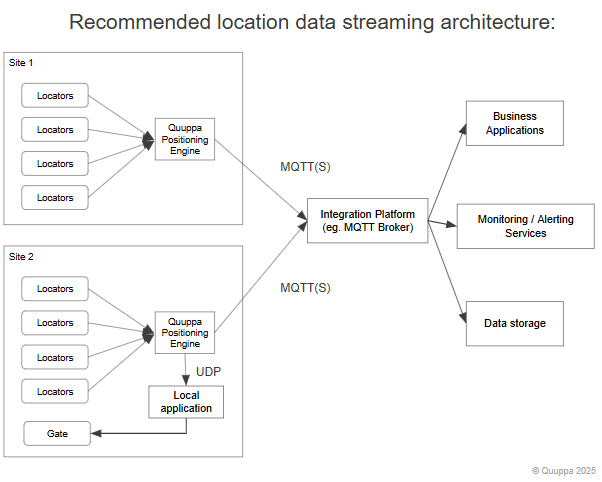

Software Integrations
The Quuppa Intelligent Locating System provides the high-quality, real-time data foundation required for digital transformation and process optimisation. By bridging the gap between physical events and digital systems, Quuppa ensures that your enterprise applications operate on accurate operational signals.
The system provides three primary interface functions:
- Receive data: collect precise locating and sensor data from tags or compatible Bluetooth devices
- Send commands: transmit information or instructions back to devices (e.g. commands)
- Manage infrastructure: monitor and configure the positioning environment, including Quuppa Locators and system status.
Depending on your architecture and use case, you can build integrations using two methods:
-
Data push streams (Output Targets).
-
REST APIs.
1. Receive data
The recommended architecture for location and sensor data is push streams. This method allows you to configure data flows with specific collecting and sending criteria to suit your application’s requirements.
Select the protocol based on your network environment:
-
MQTT(S) for applications outside the local network.
-
UDP for applications inside the local network.

2. Sending information back to devices
You can deliver information back to the floor to provide real-time feedback to system users.
Typical use cases include:
-
Acknowledge user actions by flashing the device LED.
-
Alert users to potential hazards or tasks by activating the buzzer.
-
Optimise power usage by modifying device configuration to preserve battery (e.g. activating sleep mode).
The commands are delivered via Quuppa REST APIs:
-
/commandTag: send pre-defined commands, such as
BLINK_LED, to a device. -
/sendQuuppaRequest: send custom messages to devices.
-
On your Quuppa Site Manager platform
-
Included with the Quuppa Positioning Engine
-
In the downloads section of the Quuppa Customer Portal.
3. System status and telemetry
Monitor and modify the status and configuration of your positioning environment using system telemetry. You can integrate this telemetry using either a push event or an on-demand poll approach.
3.1 Telemetry as push stream:
Telemetry for tags, Quuppa Locators, and the Quuppa Positioning Engine (QPE) can be pushed via MQTT or UDP.
Common telemetry data and events to push:
-
Tags: battery voltage, current configuration, and configuration changes.
-
Locators: connection state, device state, traffic throughput, and configuration changes.
-
Positioning Engine: engine state, throughput metrics, resource usage (CPU, RAM, Disk), and configuration changes.
3.2 Telemetry as an on-demand poll:
You can also request the status of system components through REST APIs.
Typical APIs used:
-
/getTagData
-
/getLocatorData
-
/getPEData